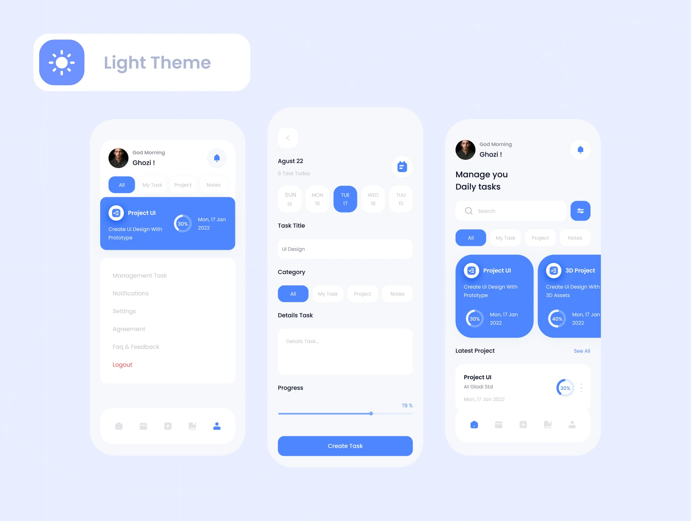
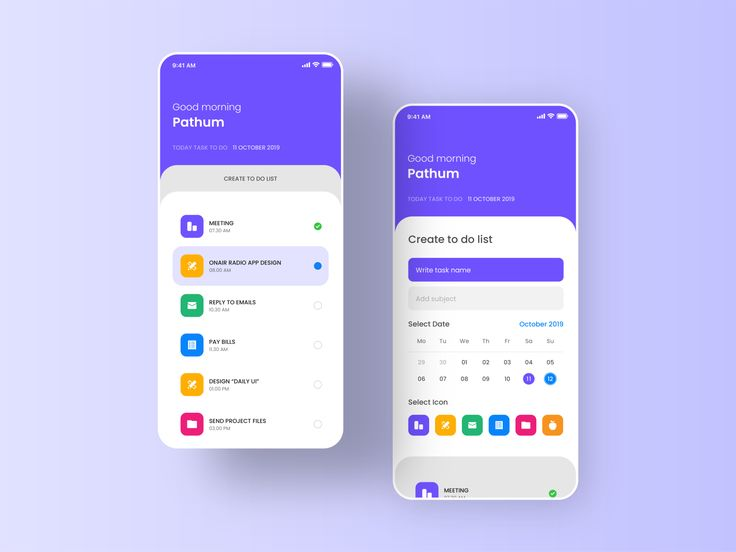
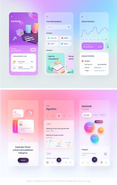
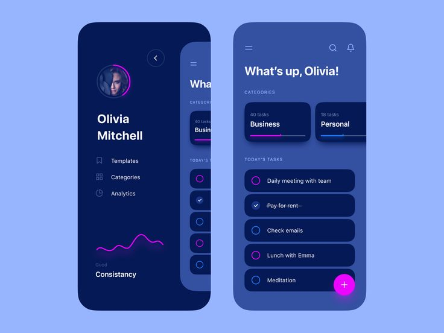
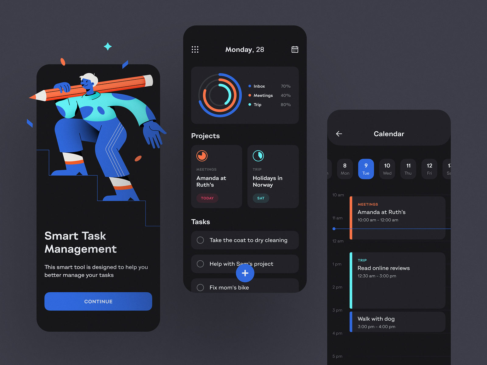

Cartel, UI/UX foundation
Cartel Design Reference
The UI/UX foundation for every build session. It is the floor, not the ceiling. The reference images were supplied by the client. They are look-and-feel references only, not products to copy.
How to read this file
- This file is the source of truth for look, feel and control style. It replaced
02-DESIGN-REFERENCE.mdin #139. It was first filled in on 2026-08-09, deliberately before Slice 1, so early screens would not set visual conventions ad hoc. - Palette values live in
mobile/src/theme/tokens.ts, which is the sole palette source. The swatches here are copies, andscripts/check-design-reference.mjsfails if they drift. - This file is republished as an Artifact whenever it changes. Agents read the text; the live specimens are for people. Every rule is also written out as text.
- Status labels: Built is in the app today. Decided, not built is agreed with Ant and describes the intended design, not the current app. Retired no longer applies.
- Reference images load from
design-refs/next to this file.
Reference sites and apps Built

01-ghozi-light-tasks.jpeg
02-pathum-todo.jpeg
03-pastel-gradient.jpeg
04-avoid-dark-neon.jpeg
05-avoid-dark-illustration.png (shown small, the file is about 2 MB)- Light task-manager concept (
design-refs/01-ghozi-light-tasks.jpeg). Take the overall register: soft-shadowed rounded cards on an off-white ground, one saturated accent colour carrying all emphasis (selected chip, active card, primary button), everything else near-neutral. A full-width primary CTA at the bottom of a form (amended by Decided in #110, built in #143). Filter chips as a horizontal pill row. This is the closest single match to the agreed tone and wins ties. - Pastel to-do concept (
design-refs/02-pathum-todo.jpeg). Take the list-row anatomy: a coloured icon chip on the left, label, circular check target on the right, one row per item with generous vertical padding. The per-item colour chip is the mechanism for showing an item's store section or aisle once route learning exists. Colour carries grouping without a second column of text. - Pastel gradient concept (
design-refs/03-pastel-gradient.jpeg). Take only the soft gradient and blob treatment, and only for empty states, onboarding and the household-invite screen. Gradients stay out of list and shopping surfaces, where they cost legibility. - Dark neon and dark illustration concepts (
design-refs/04-avoid-dark-neon.jpeg,design-refs/05-avoid-dark-illustration.png). These are anti-references: supplied and rejected. Neon glow accents, a dark-first palette and illustration-heavy onboarding are not the direction. One motif is kept: the ring or donut progress indicator, a candidate for showing shop or list completion. Take the shape and leave the styling.
Tone Built
- Feel: warm and friendly. Rounded geometry, soft shadows over hard borders, approachable copy. Human, not clinical; friendly, not childish.
- Explicitly avoid:
- Neon or glow accents and dark-first theming (see the anti-references).
- Illustration-led onboarding. The app should be usable before it is explained.
- Gradients on any list or shopping surface.
- Dense, information-heavy dashboards. Cartel is a list, not an analytics tool.
Decided in #110 Home look: decided, not built
Button width is built (#143, 0.0.46). The Home look below describes the decided design, not the current app.
Buttons are content-sized by default Built. Full-width is kept only for the single main action of a form or an irreversible commit step (for example Finish shopping). A screen-level form's main action counts as a form; anything inside a card or an editor that opens in place counts as in-card and stays content-sized. Action plus Cancel pairs sit side by side in a ButtonRow. In-card actions use a compact pill; a global create may be icon-only or a floating circular +. The 44pt minimum tap target (docs/conventions.md) still applies. This amends reference 1's "full-width primary CTA" for everything except those two cases. App-wide rule.
Home look. Premium and modern, built so motion can be added. Reference: Copilot Money (hero on top, a row of circular rings, tonal surfaces, graphs). Motion for v1, on mount, 200 to 300ms: progress rings fill, the donut sweeps in, numbers count up; all of it honours reduce-motion. This is not the "dense analytics dashboard" rejected above: two graph tiles, tap to expand, the rest quiet. Layout and sections: Dashboard in docs/context/shopping.md.
HS house style for controls Buttons, back circle and bottom nav built
Decided in #139 on 2026-10-06. Hazardous Schematics (HS) is Ant's brand for apps and software. Cartel adopts the HS website's control language so it reads as an HS-built app.
This section describes the decided design, not the current app. Ant stated directly: the bottom pill replaces the hamburger because the hamburger is hard to reach, the palette stays, no glass, and only the shape and style of buttons change. Those are decided.
The following were not directly stated by Ant. They were the orchestrator's reading of his answers. Ant reviewed the specimens below on 2026-10-06 ("looks great") and accepted them: the back circle placement (drill-down screens only) and the hairline look; the close circle (X) for dialogs; the 2px accent ring and 300ms slide on the current nav link (taken from the HS website's nav); the soft shadow on the floating pill; the exact split of four text destinations plus the gear; Shopping Mode showing only the back circle. On 2026-10-07, at Ant's direction, the gear moved from the header into the bottom pill as a fifth, icon-only item.
Scope
- Only the shape and style of controls change.
- Cartel keeps its own locked palette. Colours come only from
mobile/src/theme/tokens.ts, light and dark. - No glass: no backdrop blur, no sheen, no specular edge. Ant judged it would not read well in Cartel because it is not used app-wide.
- No HS black or slate ground and no HS orange.
- The website's radius scale for cards and panels is not adopted. Cards and panels keep Cartel's current radii. Only controls change shape.
Buttons, chips and motion
- Pills. Buttons are pills (radius 999). Chips are pills. Icon controls are circles.
- Ghost pill. Transparent or surface fill, 1px hairline in the
bordercolour,textPrimarylabel. On press, the fill becomesaccentwithaccentContrasttext and, like every control, the pill scales to about 0.97. No other movement. - Primary pill.
accentfill at rest withaccentContrasttext. - No hover on iPhone. Primary is the main action and the ghost pill is secondary. Accent shows on press only; keyboard focus keeps the browser focus ring, with no accent fill (decided in #156, so a fill cannot stick after a tap in iOS Safari).
- Width. Built in #143: full-width remains only for the single main action of a form or an irreversible commit step (Finish shopping), per the #110 rule. Everything else is content-sized. #156 changes shape and colour only; "compact pill" here is not the
compactprop (the 44x44 "+" square, now a circle). - Hit area. 44pt minimum always. The visible control may be smaller, for example about 36pt with an invisible larger hit area.
- Press feedback. Every pill, chip and icon circle scales instantly to about 0.97 on press. Rows, check circles and cards are excluded: they keep their pressed tint, with no scale and no accent fill (decided in #156). An accent fill on a check circle would read as "ticked", and scaling full-width rows mid-shop distracts.
- Icon controls. About 36pt circle inside the 44pt hit area. No ring at rest; the circle fills with
accentand the glyph turnsaccentContraston press. The ringed circle is for header controls only (#157, #158). - Disabled ghost pill. 50% opacity plus a dashed hairline, so it reads as unavailable by shape as well as fade. A disabled primary pill keeps the opacity only.
- Built (#156, 0.0.47). Pill buttons, chips, icon circles and press feedback are built in
ui.tsx, with motion values inmobile/src/theme/motion.ts(CSS transitions on web, scale only on native). - Timing is asymmetric. Entering a state is slow with ease-out. Exiting is fast with ease-in.
- Reduce motion. All motion honours reduce-motion: the state still changes, with no scale or slide.
- Meaning. Never encode meaning in colour alone.
| Curve or duration | Value | Use |
|---|---|---|
| Enter | cubic-bezier(.22,.31,0,1) | Entering a state, ease-out |
| Exit | cubic-bezier(.69,0,0,1) | Leaving a state, ease-in |
| Quiet | 150ms | Exits, small shifts |
| Feedback | 300ms | Press fills, nav ring slide |
| Structural | 550ms | Larger layout changes |
These are the HS website's fixed curve vocabulary.
Back circle
- A circular icon button: chevron, accessibility label "Back".
- About 36pt visible, 44pt hit area. Hairline ring on a solid
surfacefill. No glass. - Placed at the left of the header.
- Shown on drill-down screens only: list detail, Shopping Mode, a Store's item catalog, Feedback and similar.
- Not shown on the four bottom-nav destinations.
- A matching close circle (X) is used for dialogs.
- Built in #157 (0.0.48). The wordmark sits at the left, beside the back circle on drill-down screens (changed in #158 at Ant's review, 2026-10-07).
Bottom pill nav
- Built in #158 (0.0.49): the hamburger
NavMenupopover is replaced by a floating pill nav at the bottom of every screen, clear of the iPhone home-bar safe-area inset. Reason: thumb reach, the hamburger is awkward to reach. The pill sits in layout flow under the screen rather than overlaying it, so content never scrolls beneath it (no scroll-under); it only looks floating, through side margins, the surface fill, the hairline and the shadow. - Four text destinations: Home, Lists, Stores, History, then the Settings gear.
- Settings (the current Household screen, renamed in #109) is the fifth item in the pill: the gear icon, no text, accessibility label "Settings". It is a nav link like the others: ringed, with the ring sliding to it, while Settings is open. The header has no right control. It opens the current Household screen (or Join or create a household) until #109 lands. Changed 2026-10-07 at Ant's review of the running app.
- Look: solid
surfacepill, 1px hairline, soft shadow only because it floats. No glass. - Current destination: a 2px accent ring drawn flush inside that link's capsule, no fill. It slides to the new link on change (300ms, transform only, ease-out). Static under reduce-motion.
- The pill hides while the on-screen keyboard is up, and in Shopping Mode. Shopping Mode keeps only the back circle: oversized targets, no decoration.
- Link tap targets stay at 44pt or larger. Five text labels do not fit comfortably at 375px, hence four text links plus the icon-only gear, in five equal slots; at 375px each slot is about 67pt wide.
Status and collisions
- Status: buttons, chips and press feedback built in #156 (0.0.47). The back circle built in #157 (0.0.48). The bottom pill nav is built in #158 (0.0.49).
- Navigation collides with #109, #103 and #110 (#144, #145). Whichever lands later rebases.
Control specimens
Live controls in scoped light and dark containers. They use the tokens.ts palette whatever theme your browser is in.
Buttons, chips and icon circles
Cartel light
Press and hold, or tab to a control. Ghost pill and chips fill with the accent on press only; keyboard focus shows the focus ring, with no fill. Every control scales to 0.97 on press.
Cartel dark
Press and hold, or tab to a control. Ghost pill and chips fill with the accent on press only; keyboard focus shows the focus ring, with no fill. Every control scales to 0.97 on press.
Phone mock: drill-down screen with bottom pill nav
Placeholder content. Back circle and wordmark at the left, nav pill at the bottom with the Settings gear as its last item. Tap a nav item to see the ring slide.
Placeholder list
- Placeholder item one
- Placeholder item two
- Placeholder item three
Placeholder list
- Placeholder item one
- Placeholder item two
- Placeholder item three
Phone mock: Shopping Mode
Placeholder content. Back circle only, no nav pill, oversized check targets.
- Placeholder item one
- Placeholder item two
- Placeholder item three
Back circle only. No nav pill, no decoration.
- Placeholder item one
- Placeholder item two
- Placeholder item three
Back circle only. No nav pill, no decoration.
Header, today and decided
Header, before #158 (schematic)
Header, decided
Header, before #158 (schematic)
Header, decided
Glanceability (Shopping Mode only) Built
Agreed constraint: the mid-aisle, one-handed, in-a-hurry case governs Shopping Mode alone (Slice 5 onward). List-building and setup screens are free to be more considered.
In Shopping Mode: larger type, higher contrast, oversized check targets, minimal decoration. Elsewhere: standard mobile sizing and the warmer treatment above. This is a deliberate split, not an inconsistency. The two contexts have different jobs, and Shopping Mode's job is legibility at arm's length while distracted.
Constraints Built
- Brand assets: none. Cartel starts fresh: no logo, palette or type commitment exists. This file uses the system font stack for that reason.
- Palette: locked 2026-08-10, during Slice 1. Chosen against real household screens rather than in the abstract, as intended. Values live in
mobile/src/theme/tokens.ts, which is the source of truth, not this file.- Accent: burnt orange
#C2410C, 5.2:1 on white. Terracotta and olive were the alternatives. Olive lost because its neutrals drift cool. Terracotta lost to reference 1 being the stated tie-breaker. Burnt orange is also the loudest of the three, which suits Shopping Mode more than list-building, so it is worth re-checking when Slice 5 lands. - Ground
#FAF6F1, warm neutrals, one accent carrying all emphasis. Light is the default. A Light/Dark/System toggle is live (#26, PR #30) with a dark palette whose accent is gold.userInterfaceStyleisautomatic. - Original directional constraints, all met: light ground, single saturated accent, warm rather than cool neutrals, nothing in the neon register.
- Accent: burnt orange
- Accessibility (baseline, revisit if it bites): WCAG AA contrast (4.5:1 body, 3:1 large text); touch targets 44pt or larger, larger in Shopping Mode; never encode meaning in colour alone, so the section-colour chip from reference 2 always needs a text or icon partner; respect OS dynamic type and reduce-motion, the latter mattering because drag-to-reorder and animated transitions are v1 requirements per
01-CRD.md.
Palette specimens
Source of truth: mobile/src/theme/tokens.ts. These swatches are copies of its lightPalette and darkPalette. Contrast ratios are written in the tokens.ts comments for the light palette. The dark palette (#26) was measured the same way and is locked as approved.
Cartel light
Cartel dark
| Token | Light | Dark | Role and contrast (light, from tokens.ts) |
|---|---|---|---|
ground | #FAF6F1 | #15110D | Page ground. Warm off-white. Text sits on this and on surface; ground is always the weaker of the two. |
surface | #FFFFFF | #221B15 | Cards and rows. |
surfaceSunken | #F2EBE3 | #0F0C09 | Inset areas. |
border | #E7DCD0 | #3D3226 | Hairlines. |
accent | #C2410C | #C9A227 | The one accent. 5.18:1 on white, 4.81:1 on ground. |
accentPressed | #9A340A | #E6BC3A | Pressed state. 7.32:1. Darker than accent in the light theme, brighter in the dark theme. |
accentWash | #FCEDE6 | #2E2612 | Pale accent wash for selected rows and quiet emphasis. Never bears text. |
accentContrast | #FFFFFF | #15110D | Text on accent. White on accent is 5.18:1, inverted. Dark ink in the dark theme, because white on the gold measures 2.42:1 and fails AA. |
textPrimary | #2B2320 | #F2E9DC | 15.40:1 on white, 14.31:1 on ground. |
textSecondary | #6B5D54 | #B7A996 | 6.33:1 on white, 5.88:1 on ground. AA for body text. |
positive | #2F6F4E | #6FBE8B | 5.99:1 on white, 5.57:1 on ground. |
negative | #A32E24 | #E28577 | 7.06:1 on white, 6.56:1 on ground. |
Two deliberate inversions in the dark palette: accentContrast is dark ink, and accentPressed is brighter than accent (Material's dark-theme convention). Other tokens in tokens.ts: spacing 4, 8, 16, 24, 32, 48; radius sm 8, md 14, lg 20, pill 999; font sizes caption 13, body 16, title 22, display 30; minimum touch target 44; card elevation shadow opacity 0.08, radius 16, offset 0 by 4 (shadow colour #2B2320 in light, #000000 in dark).
Slice 4 merge prompt Retired
Retired by #107 (ADR 0007): stores come only from the seeded catalog, so there is no create flow and no merge prompt. Git history holds the original rules.